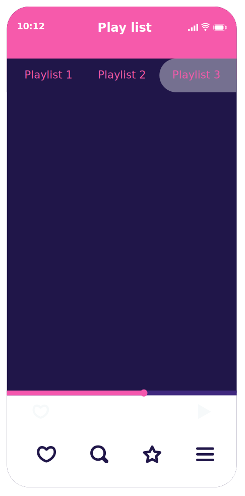

Ranking Cringemusic_cast
Nuestro top 5 con su respectiva yapa.

1. La gata bajo la lluvia
Rocío Dúrcal
2. Mariposa Traicionera
Maná
4. La incondicional
Luis Miguel
5. Corazón partío
Alejandro Sanz
Todas las semanas nos conectamos contigo para crear el ranking más genial, divertido y lleno de sorpresas. Tus canciones favoritas no solo cuentan, ¡nos inspiran!
Eres parte esencial de nuestros momentos más cringe (en el buen sentido), así que no dejes de participar:
app_shortcut Llama al +51 994 815 356,
groups_2 Vota en nuestras redes sociales,
theater_comedy Elige lo que sonorá en nuestro playlist.
Porque este espacio no sería lo mismo sin tus elecciones, tus historias... y tus canciones cortavenas favoritas.
A continuación, damos paso a los comentarios de nuestros oyentes, que semana a semana hacen de este ranking algo único, cercano y, por supuesto, bien dramático.
La gata bajo la lluvia
"A veces, no hace falta una tormenta para sentirnos solos... Hoy, en nuestra estación, suena en primer lugar una canción que nos recuerda que incluso una gata bajo la lluvia puede llevar en el alma un huracán. Prepárate para dejarte llevar por los acordes de la melancolía... esto es 'La gata bajo la lluvia'."
Mariposa traicionera
"Dicen que las mariposas son delicadas, pero esta... esta vino con el aguijón afilado. Una traición con perfume dulce, que primero te vuela alto... y después te deja caer sin red. Para todos ustedes que fueron apuñalados"
El triste
"Y seguimos acompañándote en esta madrugada de almas sin consuelo… Donde el café ya se enfrió, y lo único que arde… es su recuerdo. Para las personas más migajeras, esta es tu canción en tercer lugar". Hoy suena una canción que no se canta…Se sufre.
Siempre hay una canción
Todos tenemos una canción que nos rompe, nos remienda o simplemente nos hace sentir que somos protagonistas de una telenovela turca… con ventilador dramático incluido.
¿Es un clásico dolido? ¿Un rock que te da vida? ¿Una balada que te hace llorar aunque no tengas razones?
Porque así como también nos reímos, hoy lloramos junto con nuestra fiel seguidora expand_circle_down
Cerrar close
De: Ana Lucia
Asunto: Canción del recuerdo
Hola Cringe Music, les escribe una seguidora aficionada que se ríe con cada ocurrencia de ustedes. Sin embargo, esta vez mi petición será de "Mi niña bonita" de Los Panchos, esta canción me la cantaba mi abuelito. Se la canté por última vez cuando murió en mis brazos. Espero que sea una de las más votadas, me gustaría escucharlo en su página. Sigan así!!
Cuéntanos cuál debería estar en nuestro ranking y defiende tu elección como si estuvieras en La Voz, pero con más drama y menos jurado.
Recuerda soldado...
Entre estas y más razones por las que te dejaron. Hoy te decimos... efe en mayúscula! vvexpand_circle_down
Cerrar close
De: Chakalito mas naki
Asunto: Sueltate una de regeton
Tio Cringe, ya se ke no suben regeton, pero este nuevo seguidor quiere escuchar AMORFODA de Bud Banny para poder llorar kon gusto pues, ya que ella me dejo por otro. Un patita que escucha Luis Miguel y esas webadas. Espero me hagn caso o les mando la moto.